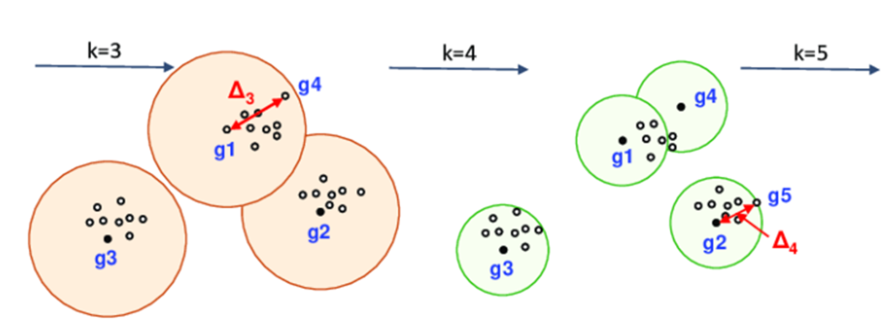

Goal
This problem aims to select k cluster centers from a given set of points such that the maximum distance of any point to its closest center is minimized.
Minimize: $$\max_{v \in V} \min_{c \in C} d(v, c)$$
Algorithm
- 임의의 한 점을 첫 번째 중심으로 선택
- 이후에는 "가장 먼 점"—즉, 현재 선택된 중심들과의 거리 중 가장 큰 값을 갖는 점—을 새로운 중심으로 반복해서 선택
- 총 k개의 중심이 선택될 때까지 반복

Guarantee: 2-Approximation
Greedy로 선택된 k개의 중심으로 구성된 해의 최대 거리 r은 최적 해의 최대 거리의 최대 2배이다.
$$r \le 2 r^{\ast}$$